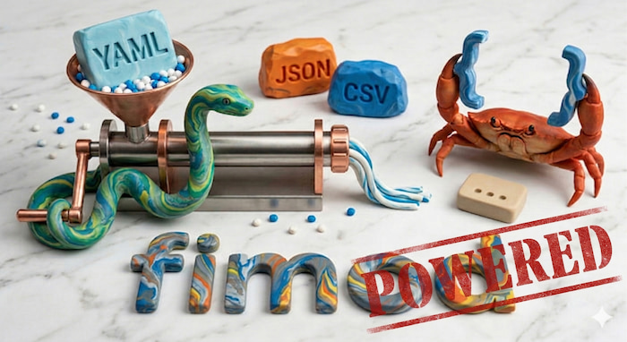

fimod-powered — curated mold registry
Production-ready fimod molds — install once, use everywhere.
No system Python required. One registry, all the transforms you need.
 Get started in 30 seconds
Get started in 30 seconds
# 1. Install fimod (see https://pytgaen.github.io/fimod/guides/quick-start/)
curl -fsSL https://raw.githubusercontent.com/pytgaen/fimod/main/install.sh | sh
# 2. Add the fimod-powered registry
fimod registry setup # And accept to install fimod-powered
That's it. You now have access to all molds via fimod s -m @mold_name.
 Showcase
Showcase
Generate a Dockerfile from a descriptor
Describe your app in JSON, get a production-ready Dockerfile.
Migrate Poetry to uv
Convert your pyproject.toml from Poetry to uv in one command.
Get the latest GitHub release
Grab the latest release tag from any GitHub repo — no API token needed.
Pipe it into your scripts, CI, or Dockerfiles. Pair it with @download to fetch the asset directly.
-
Getting started
Install fimod, add the registry, and start transforming data.
-
Browse all molds
See the full catalogue with input/output formats and arguments.
-
Authoring a mold
Learn how to write a mold: structure, transform function, directives.
-
Contributing
Propose your mold to fimod-powered: workflow, tests, catalog.